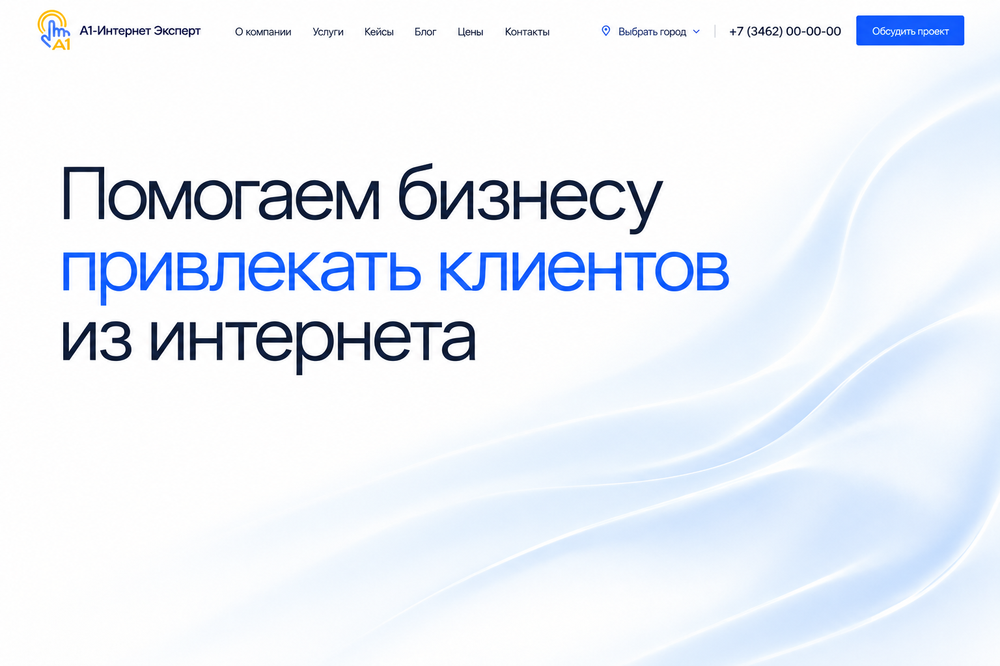

Типографика и свет
Только заголовок на белом фоне. Мягкая световая волна добавляет глубину и может плавно двигаться.
Что изменилось
Пояснение, кнопки под заголовком и показатели убраны из первого экрана. Обсудить проект по-прежнему можно из шапки.